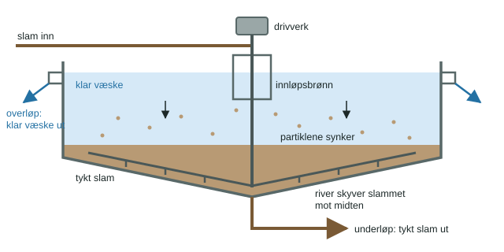
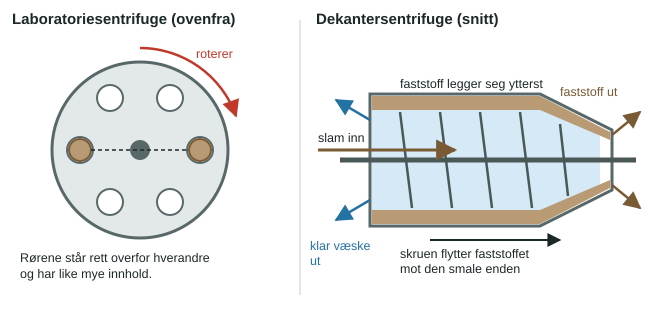

Sedimentering og sentrifugering
Mange prosesser gir slam, altså væske med faste partikler i. Da må vi skille det faste stoffet fra væsken. Den enkleste måten er å la partiklene synke til bunnen. Går det for sakte, kan vi bruke en sentrifuge, som får partiklene til å synke mye raskere.
Hvorfor synker partiklene?
En partikkel synker i en væske når den har større tetthet enn væsken. Stein og metall er mye tyngre enn vann for samme volum, og synker. Det at partikler synker og legger seg på bunnen, kalles sedimentering. Hva tetthet er, lærer du på siden Masse, volum og tetthet i Fysiske prinsipper.
Hvor fort partiklene synker, kalles synkehastigheten. Den avhenger av tre ting:
- Størrelsen på partiklene. Store partikler synker mye raskere enn små. Sand synker på sekunder, mens fin leire kan bruke timer eller dager.
- Forskjellen i tetthet. Jo tyngre partiklene er sammenlignet med væsken, desto raskere synker de.
- Hvor tyktflytende væsken er. I en tyktflytende væske, som olje, synker partiklene langsommere enn i vann. Varm væske er mindre tyktflytende enn kald, så partiklene synker raskere når væsken er varm.
Oppgave: I en tank som er 3,0 m dyp, synker partiklene 2,0 cm per minutt. Hvor lang tid tar det før partiklene som starter helt øverst, har nådd bunnen?
Løsning:
- Gjør om til samme enhet: 3,0 m = 300 cm.
- Tid = strekning delt på fart: \( \frac{300 \text{ cm}}{2{,}0 \text{ cm/min}} = 150 \text{ min} \)
- Gjør om til timer: 150 min / 60 = 2,5 h.
Svar: Det tar 2,5 timer. Med enda mindre partikler tar det mye lenger tid. Derfor trenger vi store tanker eller en sentrifuge.
Fortykker og klaringsbasseng

En fortykker er en stor, rund og lav tank med svakt skrå bunn. Slammet kommer inn i midten, i en innløpsbrønn som roer ned strømmen, slik at partiklene får synke i fred. Partiklene legger seg som et tykt slam i bunnen. Den klare væsken stiger opp og renner over kanten. Den kalles overløp. Det tykke slammet som tas ut i bunnen, kalles underløp.
I bunnen går det en rive sakte rundt, gjerne én runde på flere minutter. Den skyver slammet inn mot midten, der det pumpes ut. Rivene må ikke gå for fort, for da virvles slammet opp igjen.
Et klaringsbasseng ser nesten likt ut. Forskjellen er hva vi vil ha. I en fortykker er målet et tykt slam med lite vann, for eksempel før filtrering. I et klaringsbasseng er målet klart vann, for eksempel i et renseanlegg.
Svært små partikler synker nesten ikke. Da kan vi tilsette et stoff som får partiklene til å klumpe seg sammen til større fnokker. Det kalles flokkulering. De store fnokkene synker mye raskere.
Skille to væsker
Sedimentering virker også for to væsker som ikke blander seg, for eksempel olje og vann. Den tyngste væsken legger seg nederst, og den letteste flyter opp. På laben skiller vi dem i en skilletrakt. I industrien brukes en tank der olje kan tappes av øverst og vann i bunnen. En oljeutskiller ved et verksted eller en bensinstasjon virker på samme måte.
Sentrifugering
Når partiklene synker for sakte, kan vi bruke en sentrifuge. Den roterer veldig fort. Da blir partiklene presset utover med en kraft som kan være mange tusen ganger større enn tyngdekraften. Partiklene «synker» da utover mot veggen i stedet for nedover. En sentrifuge som gir 1000 ganger tyngdekraften, får partiklene til å synke omtrent 1000 ganger raskere. Det som tar timer i en tank, kan ta sekunder i en sentrifuge.

På laben brukes en laboratoriesentrifuge med små rør. Etter sentrifugering ligger det faste stoffet som en klump i bunnen av røret. Væsken over kan helles eller pipetteres av.
I industrien er dekantersentrifugen vanlig. Den har en liggende trommel som roterer fort. Inni går en skrue med litt annen fart enn trommelen. Faststoffet legger seg ytterst mot trommelveggen, og skruen flytter det mot den smale enden, der det går ut. Den klare væsken renner ut i den andre enden. Dekantersentrifugen går kontinuerlig og brukes blant annet til å avvanne slam i renseanlegg og i næringsmiddelindustrien.
En tallerkensentrifuge har mange tynne, kjegleformede plater, kalt tallerkener, stablet oppå hverandre i en trommel. Den brukes særlig til å skille to væsker, for eksempel olje og vann, eller fløte fra melk. Den er en type separator, altså utstyr som skiller to faser.
Massebalansen for et skilletrinn, altså hvor mye som går ut i hver strøm, lærer du å regne ut på siden Separasjon i Fysiske prinsipper.
- Balanse i laboratoriesentrifugen: Sett alltid rørene rett overfor hverandre, med like mye i hvert rør. Har du bare ett rør, setter du inn et motvektsrør med vann. En sentrifuge i ubalanse rister kraftig og kan bli ødelagt. Åpne aldri lokket før rotoren har stoppet helt.
- Industrisentrifuger roterer med svært høy fart og har store krefter. Følg med på alarmer for vibrasjon. Før vedlikehold skal sentrifugen stå helt stille og være sikret med lås og merk.
- Fortykkere og bassenger er store, åpne tanker. Det er fare for å falle i. Rivene går sakte, men med stor kraft. Arbeid inne i tanken er arbeid i lukket rom og krever egen tillatelse.
Test deg selv
1. Hvilke partikler synker raskest i vann?
- Store partikler med høy tetthet
- Små partikler med høy tetthet
- Store partikler med lav tetthet
Synkehastigheten øker med størrelsen på partiklene og med forskjellen i tetthet mellom partikkel og væske. Store og tunge partikler synker derfor raskest.
2. Hva kalles den klare væsken som renner over kanten på en fortykker?
- Underløp
- Overløp
- Sikterest
Den klare væsken renner over kanten og kalles overløp. Det tykke slammet som tas ut i bunnen, kalles underløp.
3. Hva er forskjellen på en fortykker og et klaringsbasseng?
- Fortykkeren roterer, klaringsbassenget står stille.
- I fortykkeren er målet tykt slam, i klaringsbassenget er målet klart vann.
- Fortykkeren skiller to væsker, klaringsbassenget skiller fast stoff fra væske.
Utstyret ligner hverandre og virker på samme måte. Forskjellen er hvilket produkt vi er ute etter.
4. Partiklene i et slam synker så sakte at en tank må være enorm. Hva er en god løsning?
- Kjøle ned slammet
- Røre kraftig i tanken
- Bruke en sentrifuge eller tilsette et flokkuleringsmiddel
En sentrifuge får partiklene til å synke mange ganger raskere. Et flokkuleringsmiddel får partiklene til å klumpe seg til større fnokker som synker raskere. Kjøling gjør væsken mer tyktflytende, og røring virvler opp partiklene.
5. Du skal sentrifugere ett rør med prøve i en laboratoriesentrifuge. Hva gjør du?
- Setter røret i et hvilket som helst hull og starter
- Setter et motvektsrør med like mye vann rett overfor prøverøret
- Setter røret i midten av rotoren
Rotoren må være i balanse. Et rør med like mye innhold rett overfor prøverøret gjør at sentrifugen går rolig og ikke blir ødelagt.
Ordliste
| Begrep | Forklaring | Engelsk |
|---|---|---|
| sedimentering | At faste partikler synker i en væske og legger seg på bunnen fordi de har større tetthet enn væsken. | sedimentation, settling |
| slam | En væske med faste partikler blandet i. | slurry |
| fortykker | En stor, rund tank der partiklene i et slam synker, slik at vi får tykt slam i bunnen og klar væske på toppen. | thickener |
| klaringsbasseng | En tank der partikler får synke slik at vi får klart vann, for eksempel i et renseanlegg. | clarifier |
| innløpsbrønn | Et rør eller en sylinder i midten av en fortykker der slammet kommer inn. Den roer ned strømmen, så partiklene får synke i fred. | feed well |
| rive | En arm som går sakte rundt langs bunnen av en fortykker og skyver slammet inn mot midten, der det tas ut. | rake |
| overløp | Den klare væsken som renner over kanten på en fortykker eller et klaringsbasseng. | overflow |
| underløp | Det tykke slammet som tas ut i bunnen av en fortykker. | underflow |
| flokkulering | Det at små partikler klumper seg sammen til større fnokker, ofte fordi vi har tilsatt et stoff. Fnokkene synker raskere. | flocculation |
| sentrifuge | En maskin som roterer fort, slik at faste partikler eller tunge væsker blir presset utover og skilles fra resten. | centrifuge |
| dekantersentrifuge | En sentrifuge med liggende trommel og en skrue inni som flytter faststoffet ut, mens væsken renner ut i den andre enden. | decanter centrifuge |
| tallerkensentrifuge | En sentrifuge med mange tynne, kjegleformede plater. Den brukes særlig til å skille to væsker, for eksempel olje og vann. | disc stack centrifuge |
| separator | Utstyr som skiller to faser, for eksempel olje og vann eller gass og væske. Det kan være en tank der fasene skiller seg av tyngden, eller en sentrifuge. | separator |
Les mer
- Separasjon (Fysiske prinsipper): massebalanse for et skilletrinn.
- Masse, volum og tetthet (Fysiske prinsipper): hva tetthet er.
Om kildene: Teksten, eksemplene og figurene på denne siden er laget for dette nettstedet. Siden bygger på undervisningsopplegg i kjemiprosess- og laboratoriefag ved Sauda vgs, som er utarbeidet med utgangspunkt i blant annet Kjemien stemmer, Laboranten og åpne nettkilder.